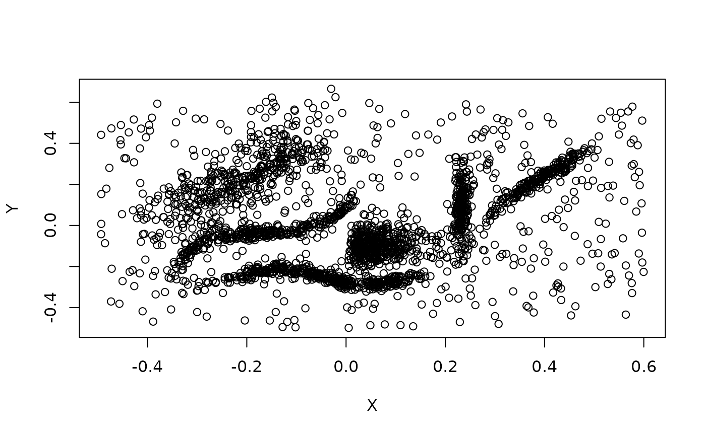
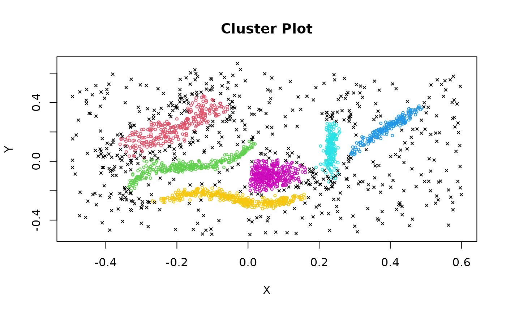

Contains 2309 2-d points with clusters of different shapes, sizes and densities plus background noise. It is the example data used in the HDBSCAN documentation to explain soft clustering.
Format
A data frame with 2309 observations on the following 2 variables.
- X
a numeric vector
- Y
a numeric vector
Source
Soft clustering explanation in the HDBSCAN documentation: https://hdbscan.readthedocs.io/en/latest/soft_clustering_explanation.html. Data file: https://github.com/scikit-learn-contrib/hdbscan/blob/master/notebooks/clusterable_data.npy
References
McInnes, Leland, John Healy, and Steve Astels (2017). hdbscan: Hierarchical density based clustering. Journal of Open Source Software 2(11):205. doi:10.21105/joss.00205
Examples
data(clusterable_data)
plot(clusterable_data)

cl <- hdbscan(clusterable_data, minPts = 15)
cl
#> HDBSCAN clustering for 2309 objects.
#> Parameters: minPts = 15
#> The clustering contains 6 cluster(s) and 565 noise points.
#>
#> 0 1 2 3 4 5 6
#> 565 271 312 197 200 356 408
#>
#> Available fields: cluster, minPts, coredist, cluster_scores,
#> membership_prob, outlier_scores, hc
clplot(clusterable_data, cl)
